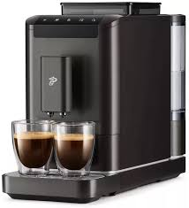

Espressor Automat
Espresoarele automate simplifică procesul de preparare, permițând realizarea unui espresso printr-o apăsare de buton. Sunt potrivite pentru uz casnic și birouri.
Avantaje:
- Preparare rapidă și convenabilă.
- Ideal pentru utilizatorii fără experiență.
- Design modern și funcții avansate.
Dezavantaje:
- Control redus asupra procesului.
- Preț mai mare decât semi-automatele.
- Unele modele necesită întreținere complicată.